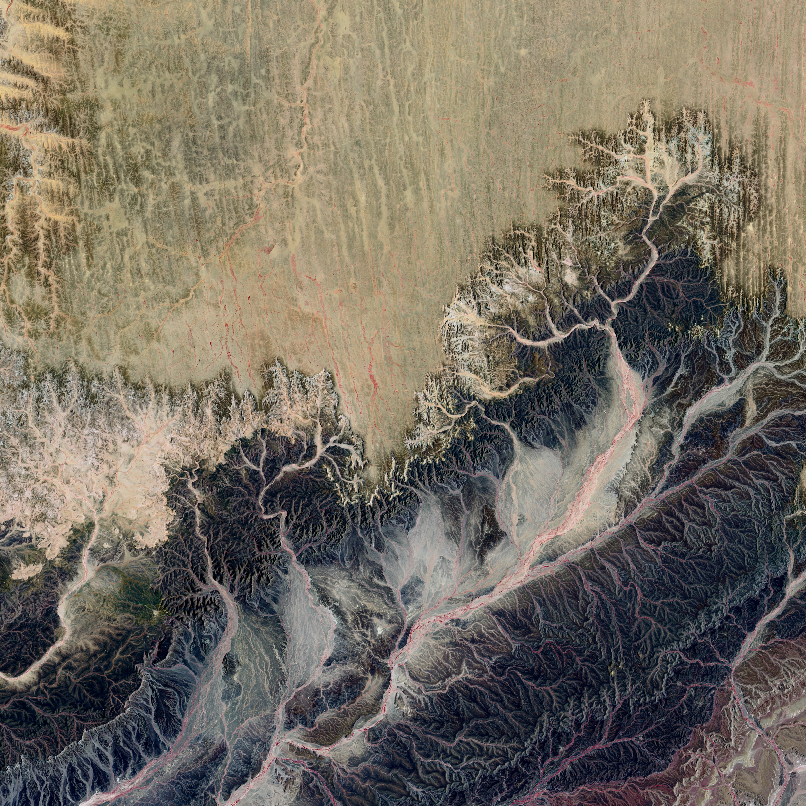

About

Hello and welcome! Let’s get to know each-other.
As a budding web-developer currently enrolled in the University of Washington’s Full Stack Boot Camp, I’m quickly building new competencies and will be seeking full-time employment starting in September of 2021.
With a background in nonprofit finance and administration and a passion for the arts, intersectional environmentalism, and tackling complex challenges, I have spent my career creating systems and order to support artists and others working in the humanity sector.
Coding allows me to be a more agile and versatile problem-solver, creating bridges between storytellers and audiences, problems and problem-solvers, and data and decision-makers. It opens doors and allows ideas to flourish and provides a more formally creative element in my professional toolkit.
I look forward to joining a team in a medium-to-large company that will push me to learn quickly, provide a pool of inspirational mentors, and allow me to gain valuable experience. In the meantime, adding to this portfolio page will keep you abreast of my growing skillsets.
If you think we might work well together, please reach out! I look forward to hearing from you.
Work
Refactor Accessibility CSS HTML
Project 2 CSS HTML JS
Project 3 UX
Project 4 REACT